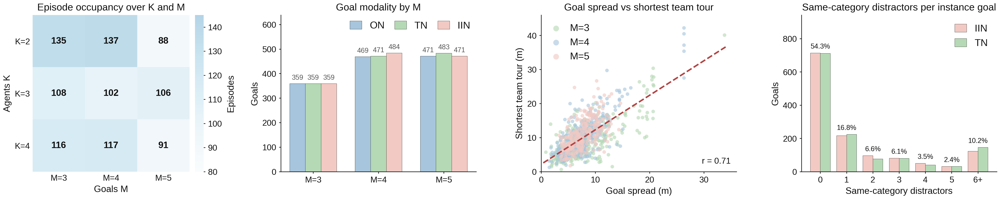
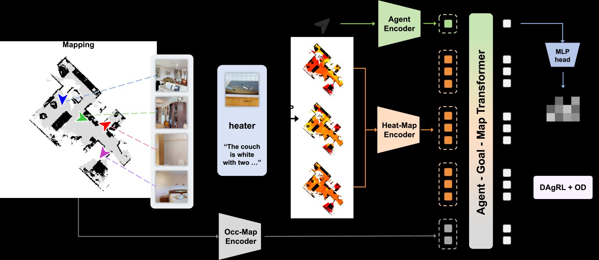
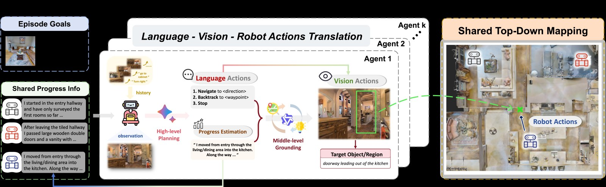
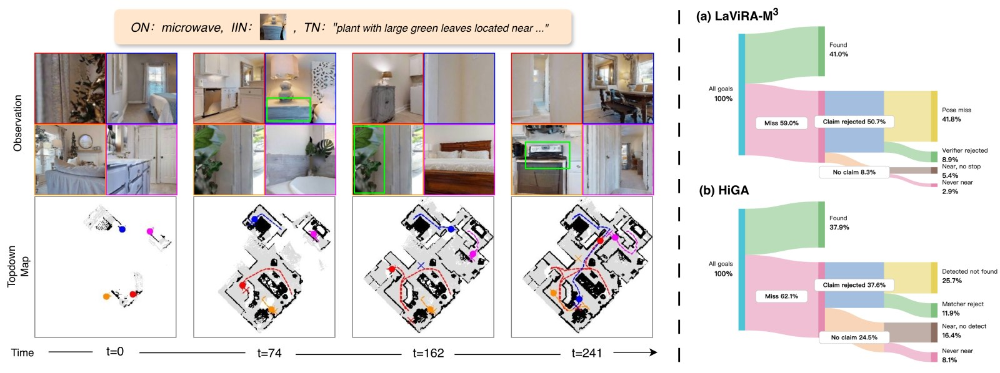

Rapid progress in AI agents and robotics makes it a matter of the near future that humans are served by a team of robots. Such a team will receive several goals at once, each specified in whatever form is convenient for the human, such as a category name, a photo, or a spoken description. Existing benchmarks study multi-agent, multi-modal, and multi-object goal navigation in isolation, and a benchmark that places all three in one episode is missing. To fill this gap, we introduce HM3D-M³.
A team of K agents starts at distributed locations in a photorealistic indoor scene and searches for an unordered set of M object goals, each given as an open-vocabulary category, an instance image, or an instance description. HM3D-M³ provides 1,000 validation episodes over 3,926 goals from 379 open-vocabulary categories, 100K observation–assignment training samples, and two team-level metrics, goal-level SR and makespan-normalized SPL. We further contribute two baselines. HiGA is a trained hierarchical goal assigner on top of a frozen open-vocabulary navigation policy, and LaViRA-M³ is a training-free team of VLM agents with shared mapping and progress analysis. Adapted multi-robot and zero-shot methods reach 16–27% SR, while our baselines reach 38–41% with complementary strengths and distinct failure modes. Furthermore, we deploy LaViRA-M³ on a heterogeneous three-robot team.
| Benchmark | Venue | Multi-agent | Multi-goal | Unordered goals | Open vocab | ON | TN | IIN | Modalities in one episode |
|---|---|---|---|---|---|---|---|---|---|
| ObjectNav | arXiv'20 | ✗ | ✗ | — | ✗ | ✓ | ✗ | ✗ | ✗ |
| RoboTHOR | CVPR'20 | ✗ | ✗ | — | ✗ | ✓ | ✗ | ✗ | ✗ |
| MultiON | NeurIPS'20 | ✗ | ✓ | ✗ | ✗ | ✓ | ✗ | ✗ | ✗ |
| CollaVN | NeurIPS'21 | ✓ | ✗ | — | ✗ | ✗ | ✗ | ✗ | ✗ |
| InstanceImageNav | arXiv'22 | ✗ | ✗ | — | ✗ | ✗ | ✗ | ✓ | ✗ |
| HM3D-OVON | IROS'24 | ✗ | ✗ | — | ✓ | ✓ | ✗ | ✗ | ✗ |
| GOAT-Bench | CVPR'24 | ✗ | ✓ | ✗ | ✓ | ✓ | ✓ | ✓ | ✓ |
| Habitat-MAS | ICLR'25 | ✓ | ✓ | ✓ | ✗ | ✓ | ✗ | ✗ | ✗ |
| HM3D-MFMON | arXiv'26 | ✗ | ✓ | ✗ | ✗ | ✓ | ✗ | ✗ | ✗ |
| HM3D-M³ (ours) | — | ✓ | ✓ | ✓ | ✓ | ✓ | ✓ | ✓ | ✓ |



| Method | Coordination | SR ↑ | SPL ↑ | ON | TN | IIN |
|---|---|---|---|---|---|---|
| VLFM | independent agents on a shared map | 16.1 | 11.8 | 24.5 | 17.7 | 5.9 |
| EGO-Swarm | geometric dispersion | 23.7 | 10.7 | 35.5 | 28.0 | 7.5 |
| Co-NavGPT2 | centralized VLM frontier allocation | 24.5 | 9.4 | 37.3 | 28.8 | 7.6 |
| DM³-Nav | decentralized intent broadcasting | 26.6 | 9.9 | 35.9 | 30.4 | 14.2 |
| HiGA (ours) | learned goal assignment | 37.9 | 7.1 | 53.0 | 40.2 | 18.8 |
| LaViRA-M³ (ours) | shared goal board and progress analysis | 41.0 | 20.3 | 38.6 | 40.9 | 41.4 |
